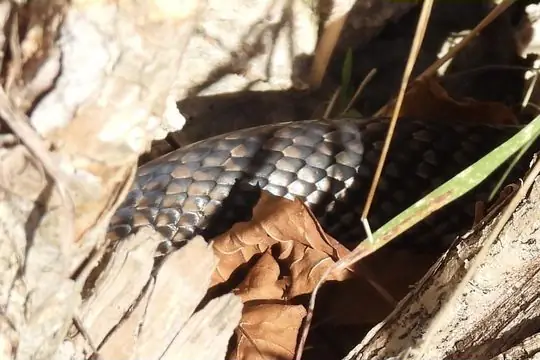
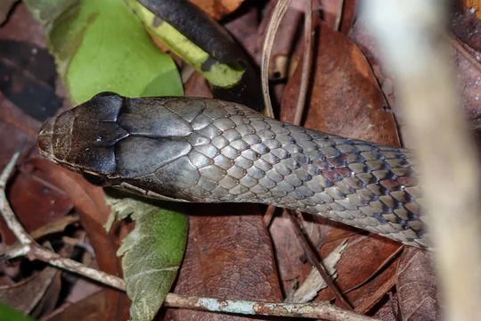
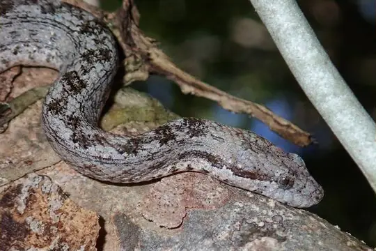
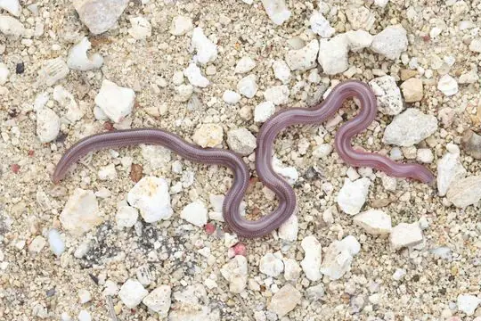
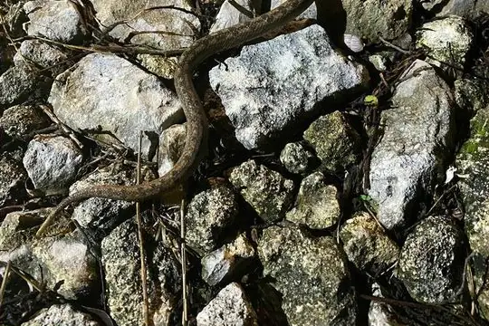
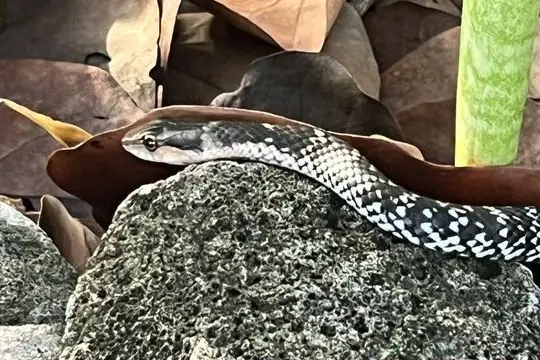

Snakes of Cayman Islands
8 living snake species are recorded in the Cayman Islands in SnakeList: 0 venomous and 8 non-venomous, from 3 families.
- 8living species
- 8non-venomous
- 3families
Danger to people
- 0harmful to people
- 0dangerously venomous
- 0mildly venomous
- 0giant constrictors
- 8harmless
Harmful = dangerously venomous + giant constrictors. Harmless = not venomous and not a giant constrictor. Mildly venomous snakes have no serious bites to people documented. Any snake can bite.
The Cayman Islands is a territory, not a sovereign country; SnakeList lists it as a place of its own. These totals count the unique living snake species SnakeList records in the Cayman Islands. The 1 species brought here by people (introduced, not native) is listed separately below and is not in the total. A species counts if it is recorded anywhere in the territory, so not every snake lives in every part of it.
In SnakeList’s checklist filters
How many of the 8 living species here each filter in the SnakeList app picks out – tap a number to show only those snakes.
Snake family2 types, 3 families
Type
Family
Habitats3 habitat groups
Habitats are estimated from where each snake is recorded and what kind of snake it is, as in the app; a snake can count in several.
Characteristics0 venomous, 3 constrictors
- 0venomous
- 8non-venomous
- 0snake eaters
Constrictor and Non-constrictor count only snakes whose family or genus is documented as constricting or not; the rest are not documented.
Other filters0 popular, 5 rare
- 0popular
- 0exotic
- 0invasive
- 0common
- 0extinct
- 0harmful
- 8low risk
Species
Showing 8 species

Bahamian Racer (fuscicauda)Cubophis fuscicauda
Black SnakeCubophis caymanus- No photo yetCayman Brac BlindsnakeCubatyphlops epactius
 Cayman Brac TropeTropidophis schwartzi
Cayman Brac TropeTropidophis schwartzi
Cayman Islands Dwarf BoaTropidophis caymanensis
Cayman Worm SnakeCubatyphlops caymanensis
Lazy SnakeTropidophis parkeri
Little Cayman RacerCubophis ruttyi
No snakes in Cayman Islands match.
Introduced to Cayman Islands
Not native here: SnakeList records this snake as brought to Cayman Islands by people.
Cayman Islands’s snakes in numbers
- Families: Colubridae 3, Tropidophiidae 3, Typhlopidae 2.
- 8 are recorded in no other country or territory in SnakeList: Bahamian Racer (fuscicauda), Black Snake, Cayman Brac Blindsnake, Cayman Brac Trope, Cayman Islands Dwarf Boa, Cayman Worm Snake, Lazy Snake, Little Cayman Racer.